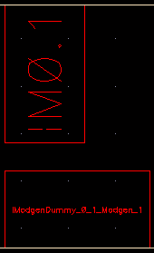

Rotating and Flipping Modgen Instances
You rotate or flip instances for the following reasons:
- To optimize placement
- To optimize routing; for example, to optimally connect resistors in a series
- To allow for matched routing
The selected instance is rotated.

Related Topics
Placing Modgen Members Interactively
Moving Modgen Instances Interactively
Adding Empty Rows and Columns to Modgens
Return to top